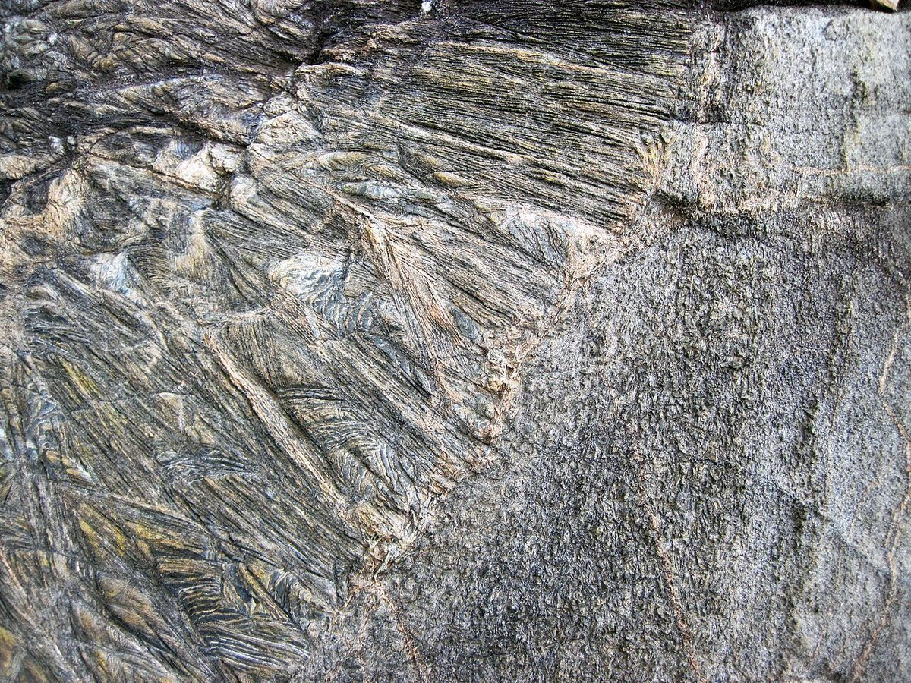
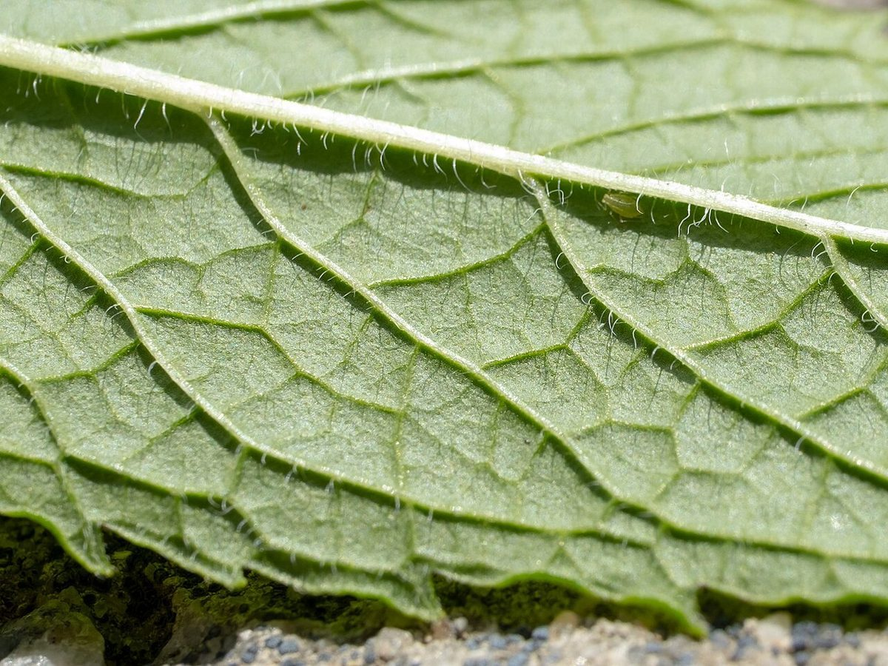
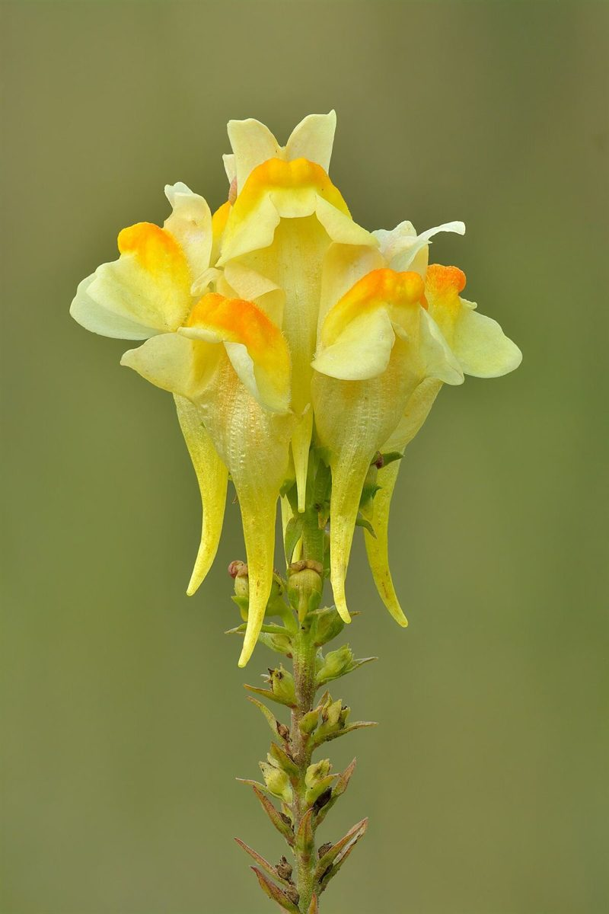

軌道 2
店のこと
お店について確認できているのは、所在地とInstagramのアカウントだけです。
このページの「想像してみる」部分は、制作側が想像して書いたものです。お店の実際の様子・考え・メニューとは関係がありません。
確認できていること
- 店名は「うちゅうねこ」、業種はカフェ
- 所在地は奈良県吉野郡吉野町窪垣内201
- 電話番号はなし。連絡はInstagramから
- 営業時間・定休日・メニュー・価格・ご予約・駐車場は準備中

想像してみる
屋号の響きから
屋号の由来は分かりません。制作側は「うちゅう」という言葉の広がりから、遠くの空や星を思い浮かべて、このサイトの軌道のデザインを考えました(実際のお店の姿とは関係ありません)。



岩肌・葉・花の写真は、小さな天体の表面をイメージしたフリー素材です。吉野町やお店とは関係ありません。